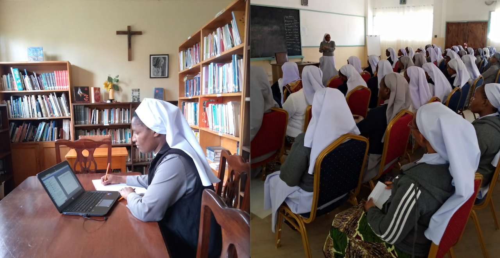

Women’s Agency in a Patriarchal Church

Left Photo: Brigidine Sisters
Right Photo: Mission Spazio Spadoni
Kenyan women, especially nuns, have faced exclusion and mistreatment by the hierarchal Catholic Church since the colonial structures were first set in place. Yet, these women have used education and their agency as human beings to change their predefined roles within the Church despite the cultural and socio-economic barriers that come their way. Their efforts have successfully created spaces for women to feel safe and seen by their religious community.
Historical Context
Since the colonial era (1895 to 1963), the Catholic Church in Kenya was dominated by male clergy, who adhered to kyriarchal theology (in which male authority is emphasized). Women were left to fulfill their expectations of gender norms through caregiving and domestic duties within religious life. This included jobs such as teaching and nursing for Catholic institutions.
“The religious are explicitly excluded from the Church’s hierarchical structure, which in itself is not the problem. The issue is that men and women live a religious life, but in reality, women who feel called by God...are stifled by the Church’s doctrinal teachings” (Eze).
The continued exclusion of women from decision-making positions perpetuated the existence of barriers for Catholic women and nuns. The only roles Kenyan Catholic women could assume were nuns or lay ministry with no roles with any kind of hierarchical authority.
“This...is based on ‘kyriarchal theology’ which can best be described as theology of the fathers, which is androcentric. On this basis, religious women are often constrained to have limited space within which they can minister in the Church." (Eze).
Resistance and Agency
By pursuing a higher education, Kenyan nuns were able to assert their presence within Church spaces and gain influence. Education allowed for women to advocate for themselves and gain recognition in Church ministries. In addition to education, their creation of safe spaces has made the Church safer and inclusive for women. These nuns have gained access to resources and established community programs to empower women and girls.
"Through personal agency and education, sisters have negotiated and constructed the Church’s space into a safe space” (Eze).
Experience of Sr. Prof. Anne Nasimiyu Wasike
As a Catholic religious sister from the Little Sisters of St. Francis, Sr. Prof. Anne pursued and completed doctoral studies in Systematic Theology in the United States. Her local bishops challenged her for this decision about her own education, to the point where they travelled to the United States for the sole purpose of discouraging her. In returning home she was received with a cold welcome and could not get a job at the Catholic University of Eastern Africa. When she was invited by the Catholic University in Nairobi to give a workshop on inculturation, she was undermined by the Bishop present, who asked a priest who studied the topic if she was correct. Despite her many achievements and doctoral experience, her superior deemed her to be untrustworthy with a lack of ability in the focus of her studies.
"...the value of the women is the value of the Church" (Eze).
Yet the lack of acceptance she experienced did not deter Sr. Prof. Anne from contributing to theology and representing the voices of women. By speaking up for women in this way, she has become a renowned professor and continues to write about inclusive theology and the intersection of faith and African culture.
"...women are not just custodians of fundamental values of the Church but also inventors of these values and therefore must be recognized for their worth" (Eze).